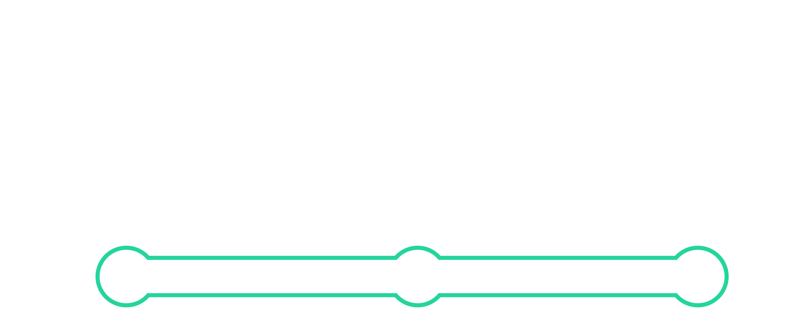
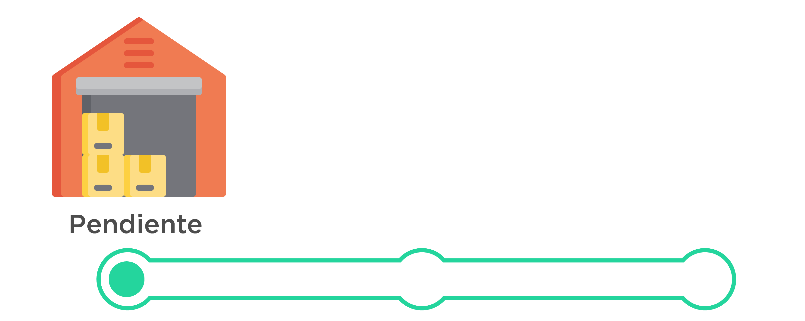
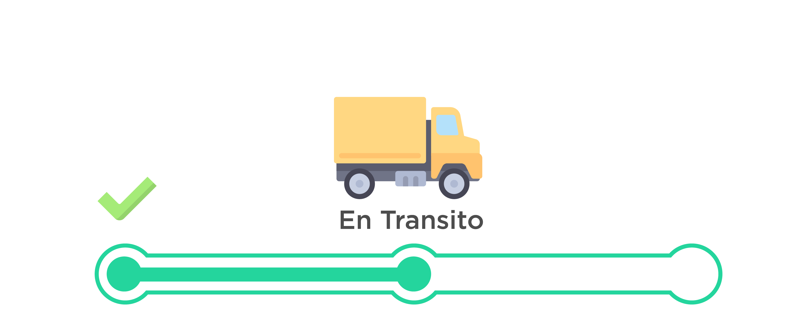
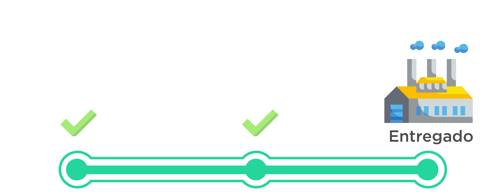

<ion-header>
    <ion-toolbar color='success'>
        <ion-title>Estatus</ion-title>
    </ion-toolbar>
</ion-header>

<ion-content [ngSwitch]="status">

    <h1>Estatus de la Orden</h1>

    

    

    

    
    

    <ion-fab vertical="bottom" horizontal="end" slot="fixed" color='success'>
        <ion-fab-button (click)='back()'>
            <ion-icon name="arrow-round-back"></ion-icon>
        </ion-fab-button>
    </ion-fab>

</ion-content>